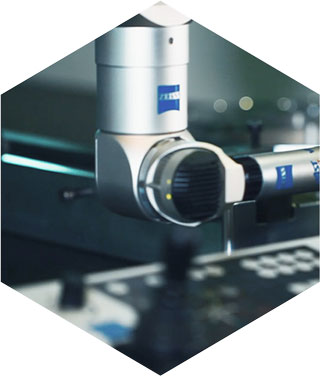
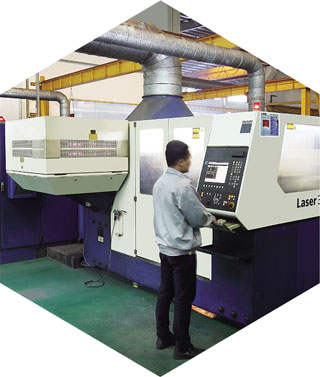
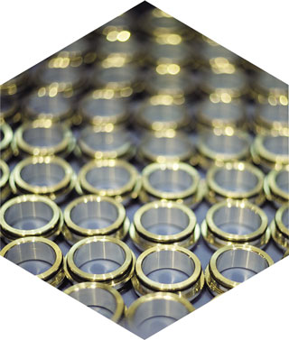

Nanxing - компания для профессионалов
Эта страница, для тех, кто хочет найти отличия среди поставщиков оборудования для производства мебели.
Получить от лучшего производителя, помимо станков еще и комфортное сотрудничество. Наша цель не доказать что мы подходим всем, а рассказать о себе.
- 
Технологии
У нас работают профессиональные технологи, которые уважают своих клиентов и не возьмутся за все проекты подряд, а выслушают Вас, поймут что вызывает сложности на производстве или Ваши перспективные устремления.
Мы приедем к Вам на предприятие. Изучим Ваше техзадание. Придумаем как помочь. Дадим решение. Все это бесплатно. И так для каждого клиента.
- 
Сервис
Сервисное обслуживание, которое Вы привыкли видеть в России, часто вызывает справедливое желание сделать все намного быстрее.
Поскольку мы представляем один завод, в нашей компании вы получите сервис и запчасти напрямую от завода, при необходимости можно вызвать инженеров Nanxing или наших, российских сертифицированных специалистов из представительства, знающих оборудование Nanxing. - 
Цены
Российский рынок исторически чувствителен к ценам. При обращении к нам заказчиков, мы слышим часто этот вопрос одним из первых. Цены в представительстве завода Nanxing в России предложены без дилерских наценок, поэтому нет необходимости дополнительного обоснования затратами или продвижением, например, российских брендов. Мы Nanxing.ru - представительство завода Nanxing в России!
Возможно, Nanxing - это та компания, которая необходима Вашему бизнесу.
Давайте выясним!
Вот так мы работаем с клиентами. Уважая друг друга. Понимая друг друга. Клиенты получают от нас гораздо больше, чем просто станки.


Nanxing – лидер поставок мебельного оборудования в России
Представленные награды и дипломы - это конечно же, хорошо, но не всегда дают гарантию успешного сотрудничества. За годы работы и тысячи успешных проектов мы убеждены что заказчики выбирают для себя компанию Nanxing потому, что с Nanxing комфортно работать.